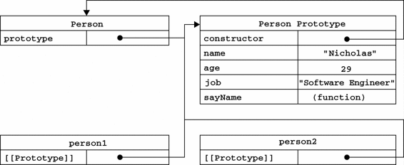
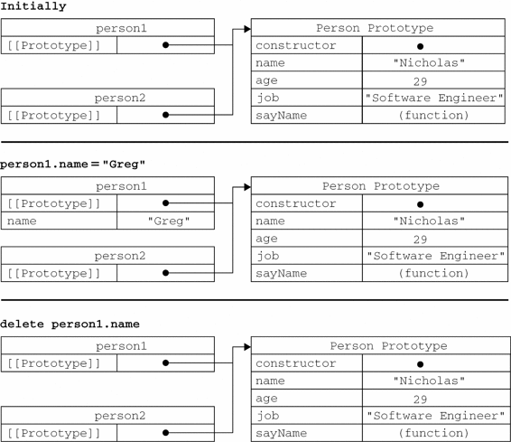
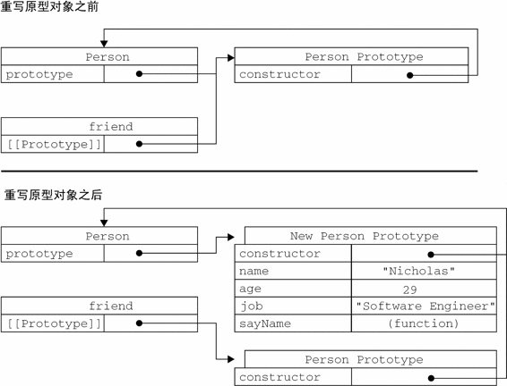

虽然Object构造函数或对象字面量都可以用来创建单个对象，但这些方式有个明显的缺点：使用同一个接口创建很多对象，会产生大量的重复代码。为解决这个问题，人们开始使用工厂模式的一种变体。
工厂模式是软件工程领域一种广为人知的设计模式，这种模式抽象了创建具体对象的过程（本书后面还将讨论其他设计模式及其在JavaScript中的实现）。考虑到在ECMAScript中无法创建类，开发人员就发明了一种函数，用函数来封装以特定接口创建对象的细节，如下面的例子所示。
function createPerson(name, age, job){
var o = new Object();
o.name = name;
o.age = age;
o.job = job;
o.sayName = function(){
alert(this.name);
};
return o;
}
var person1 = createPerson("Nicholas", 29, "Software Engineer");
var person2 = createPerson("Greg", 27, "Doctor");
FactoryPatternExample01.htm
函数createPerson()能够根据接受的参数来构建一个包含所有必要信息的Person对象。可以无数次地调用这个函数，而每次它都会返回一个包含三个属性一个方法的对象。工厂模式虽然解决了创建多个相似对象的问题，但却没有解决对象识别的问题（即怎样知道一个对象的类型）。随着JavaScript的发展，又一个新模式出现了。
前几章介绍过，ECMAScript中的构造函数可用来创建特定类型的对象。像Object和Array这样的原生构造函数，在运行时会自动出现在执行环境中。此外，也可以创建自定义的构造函数，从而定义自定义对象类型的属性和方法。例如，可以使用构造函数模式将前面的例子重写如下。
function Person(name, age, job){
this.name = name;
this.age = age;
this.job = job;
this.sayName = function(){
alert(this.name);
};
}
var person1 = new Person("Nicholas", 29, "Software Engineer");
var person2 = new Person("Greg", 27, "Doctor");
ConstructorPatternExample01.htm
在这个例子中，Person()函数取代了createPerson()函数。我们注意到，Person()中的代码除了与createPerson()中相同的部分外，还存在以下不同之处：
没有显式地创建对象；
直接将属性和方法赋给了this对象；
没有return语句。
此外，还应该注意到函数名Person使用的是大写字母P。按照惯例，构造函数始终都应该以一个大写字母开头，而非构造函数则应该以一个小写字母开头。这个做法借鉴自其他OO语言，主要是为了区别于ECMAScript中的其他函数；因为构造函数本身也是函数，只不过可以用来创建对象而已。
要创建Person的新实例，必须使用new操作符。以这种方式调用构造函数实际上会经历以下4个步骤：
创建一个新对象；
将构造函数的作用域赋给新对象（因此this就指向了这个新对象）；
执行构造函数中的代码（为这个新对象添加属性）；
返回新对象。
在前面例子的最后，person1和person2分别保存着Person的一个不同的实例。这两个对象都有一个constructor（构造函数）属性，该属性指向Person，如下所示。
alert(person1.constructor == Person); //true
alert(person2.constructor == Person); //true
对象的constructor属性最初是用来标识对象类型的。但是，提到检测对象类型，还是instanceof操作符要更可靠一些。我们在这个例子中创建的所有对象既是Object的实例，同时也是Person的实例，这一点通过instanceof操作符可以得到验证。
alert(person1 instanceof Object); //true
alert(person1 instanceof Person); //true
alert(person2 instanceof Object); //true
alert(person2 instanceof Person); //true
创建自定义的构造函数意味着将来可以将它的实例标识为一种特定的类型；而这正是构造函数模式胜过工厂模式的地方。在这个例子中，person1和person2之所以同时是Object的实例，是因为所有对象均继承自Object（详细内容稍后讨论）。
以这种方式定义的构造函数是定义在
Global对象（在浏览器中是window对象）中的。第8章将详细讨论浏览器对象模型（BOM）。
1. 将构造函数当作函数
构造函数与其他函数的唯一区别，就在于调用它们的方式不同。不过，构造函数毕竟也是函数，不存在定义构造函数的特殊语法。任何函数，只要通过new操作符来调用，那它就可以作为构造函数；而任何函数，如果不通过new操作符来调用，那它跟普通函数也不会有什么两样。例如，前面例子中定义的Person()函数可以通过下列任何一种方式来调用。
// 当作构造函数使用
var person = new Person("Nicholas", 29, "Software Engineer");
person.sayName(); //"Nicholas"
// 作为普通函数调用
Person("Greg", 27, "Doctor"); // 添加到window
window.sayName(); //"Greg"
// 在另一个对象的作用域中调用
var o = new Object();
Person.call(o, "Kristen", 25, "Nurse");
o.sayName(); //"Kristen"
ConstructorPatternExample02.htm
这个例子中的前两行代码展示了构造函数的典型用法，即使用new操作符来创建一个新对象。接下来的两行代码展示了不使用new操作符调用Person()会出现什么结果：属性和方法都被添加给window对象了。有读者可能还记得，当在全局作用域中调用一个函数时，this对象总是指向Global对象（在浏览器中就是window对象）。因此，在调用完函数之后，可以通过window对象来调用sayName()方法，并且还返回了"Greg"。最后，也可以使用call()（或者apply()）在某个特殊对象的作用域中调用Person()函数。这里是在对象o的作用域中调用的，因此调用后o就拥有了所有属性和sayName()方法。
2. 构造函数的问题
构造函数模式虽然好用，但也并非没有缺点。使用构造函数的主要问题，就是每个方法都要在每个实例上重新创建一遍。在前面的例子中，person1和person2都有一个名为sayName()的方法，但那两个方法不是同一个Function的实例。不要忘了——ECMAScript中的函数是对象，因此每定义一个函数，也就是实例化了一个对象。从逻辑角度讲，此时的构造函数也可以这样定义。
function Person(name, age, job){
this.name = name;
this.age = age;
this.job = job;
this.sayName = new Function("alert(this.name)"); // 与声明函数在逻辑上是等价的
}
从这个角度上来看构造函数，更容易明白每个Person实例都包含一个不同的Function实例（以显示name属性）的本质。说明白些，以这种方式创建函数，会导致不同的作用域链和标识符解析，但创建Function新实例的机制仍然是相同的。因此，不同实例上的同名函数是不相等的，以下代码可以证明这一点。
alert(person1.sayName == person2.sayName); //false
然而，创建两个完成同样任务的Function实例的确没有必要；况且有this对象在，根本不用在执行代码前就把函数绑定到特定对象上面。因此，大可像下面这样，通过把函数定义转移到构造函数外部来解决这个问题。
function Person(name, age, job){
this.name = name;
this.age = age;
this.job = job;
this.sayName = sayName;
}
function sayName(){
alert(this.name);
}
var person1 = new Person("Nicholas", 29, "Software Engineer");
var person2 = new Person("Greg", 27, "Doctor");
ConstructorPatternExample03.htm
在这个例子中，我们把sayName()函数的定义转移到了构造函数外部。而在构造函数内部，我们将sayName属性设置成等于全局的sayName函数。这样一来，由于sayName包含的是一个指向函数的指针，因此person1和person2对象就共享了在全局作用域中定义的同一个sayName()函数。这样做确实解决了两个函数做同一件事的问题，可是新问题又来了：在全局作用域中定义的函数实际上只能被某个对象调用，这让全局作用域有点名不副实。而更让人无法接受的是：如果对象需要定义很多方法，那么就要定义很多个全局函数，于是我们这个自定义的引用类型就丝毫没有封装性可言了。好在，这些问题可以通过使用原型模式来解决。
我们创建的每个函数都有一个prototype（原型）属性，这个属性是一个指针，指向一个对象，而这个对象的用途是包含可以由特定类型的所有实例共享的属性和方法。如果按照字面意思来理解，那么prototype就是通过调用构造函数而创建的那个对象实例的原型对象。使用原型对象的好处是可以让所有对象实例共享它所包含的属性和方法。换句话说，不必在构造函数中定义对象实例的信息，而是可以将这些信息直接添加到原型对象中，如下面的例子所示。
function Person(){
}
Person.prototype.name = "Nicholas";
Person.prototype.age = 29;
Person.prototype.job = "Software Engineer";
Person.prototype.sayName = function(){
alert(this.name);
};
var person1 = new Person();
person1.sayName(); //"Nicholas"
var person2 = new Person();
person2.sayName(); //"Nicholas"
alert(person1.sayName == person2.sayName); //true
PrototypePatternExample01.htm
在此，我们将sayName()方法和所有属性直接添加到了Person的prototype属性中，构造函数变成了空函数。即使如此，也仍然可以通过调用构造函数来创建新对象，而且新对象还会具有相同的属性和方法。但与构造函数模式不同的是，新对象的这些属性和方法是由所有实例共享的。换句话说，person1和person2访问的都是同一组属性和同一个sayName()函数。要理解原型模式的工作原理，必须先理解ECMAScript中原型对象的性质。
1. 理解原型对象
无论什么时候，只要创建了一个新函数，就会根据一组特定的规则为该函数创建一个prototype属性，这个属性指向函数的原型对象。在默认情况下，所有原型对象都会自动获得一个constructor（构造函数）属性，这个属性包含一个指向prototype属性所在函数的指针。就拿前面的例子来说，Person.prototype. constructor指向Person。而通过这个构造函数，我们还可继续为原型对象添加其他属性和方法。
创建了自定义的构造函数之后，其原型对象默认只会取得constructor属性；至于其他方法，则都是从Object继承而来的。当调用构造函数创建一个新实例后，该实例的内部将包含一个指针（内部属性），指向构造函数的原型对象。ECMA-262第5版中管这个指针叫[[Prototype]]。虽然在脚本中没有标准的方式访问[[Prototype]]，但Firefox、Safari和Chrome在每个对象上都支持一个属性__proto__；而在其他实现中，这个属性对脚本则是完全不可见的。不过，要明确的真正重要的一点就是，这个连接存在于实例与构造函数的原型对象之间，而不是存在于实例与构造函数之间。
以前面使用Person构造函数和Person.prototype创建实例的代码为例，图6-1展示了各个对象之间的关系。

图 6-1
图6-1展示了Person构造函数、Person的原型属性以及Person现有的两个实例之间的关系。在此，Person.prototype指向了原型对象，而Person.prototype.constructor又指回了Person。原型对象中除了包含constructor属性之外，还包括后来添加的其他属性。Person的每个实例——person1和person2都包含一个内部属性，该属性仅仅指向了Person.prototype；换句话说，它们与构造函数没有直接的关系。此外，要格外注意的是，虽然这两个实例都不包含属性和方法，但我们却可以调用person1.sayName()。这是通过查找对象属性的过程来实现的。
虽然在所有实现中都无法访问到[[Prototype]]，但可以通过isPrototypeOf()方法来确定对象之间是否存在这种关系。从本质上讲，如果[[Prototype]]指向调用isPrototypeOf()方法的对象（Person.prototype），那么这个方法就返回true，如下所示：
alert(Person.prototype.isPrototypeOf(person1)); //true
alert(Person.prototype.isPrototypeOf(person2)); //true
这里，我们用原型对象的isPrototypeOf()方法测试了person1和person2。因为它们内部都有一个指向Person.prototype的指针，因此都返回了true。
ECMAScript 5增加了一个新方法，叫Object.getPrototypeOf()，在所有支持的实现中，这个方法返回[[Prototype]]的值。例如：
alert(Object.getPrototypeOf(person1) == Person.prototype); //true
alert(Object.getPrototypeOf(person1).name); //"Nicholas"
这里的第一行代码只是确定Object.getPrototypeOf()返回的对象实际就是这个对象的原型。第二行代码取得了原型对象中name属性的值，也就是"Nicholas"。使用Object.getPrototypeOf()可以方便地取得一个对象的原型，而这在利用原型实现继承（本章稍后会讨论）的情况下是非常重要的。支持这个方法的浏览器有IE9+、Firefox 3.5+、Safari 5+、Opera 12+和Chrome。
每当代码读取某个对象的某个属性时，都会执行一次搜索，目标是具有给定名字的属性。搜索首先从对象实例本身开始。如果在实例中找到了具有给定名字的属性，则返回该属性的值；如果没有找到，则继续搜索指针指向的原型对象，在原型对象中查找具有给定名字的属性。如果在原型对象中找到了这个属性，则返回该属性的值。也就是说，在我们调用person1.sayName()的时候，会先后执行两次搜索。首先，解析器会问：“实例person1有sayName属性吗？”答：“没有。”然后，它继续搜索，再问：“person1的原型有sayName属性吗？”答：“有。”于是，它就读取那个保存在原型对象中的函数。当我们调用person2.sayName()时，将会重现相同的搜索过程，得到相同的结果。而这正是多个对象实例共享原型所保存的属性和方法的基本原理。
constructor属性，而该属性也是共享的，因此可以通过对象实例访问。
虽然可以通过对象实例访问保存在原型中的值，但却不能通过对象实例重写原型中的值。如果我们在实例中添加了一个属性，而该属性与实例原型中的一个属性同名，那我们就在实例中创建该属性，该属性将会屏蔽原型中的那个属性。来看下面的例子。
function Person(){
}
Person.prototype.name = "Nicholas";
Person.prototype.age = 29;
Person.prototype.job = "Software Engineer";
Person.prototype.sayName = function(){
alert(this.name);
};
var person1 = new Person();
var person2 = new Person();
person1.name = "Greg";
alert(person1.name); //"Greg"——来自实例
alert(person2.name); //"Nicholas"——来自原型
PrototypePatternExample02.htm
在这个例子中，person1的name被一个新值给屏蔽了。但无论访问person1.name还是访问person2.name都能够正常地返回值，即分别是"Greg"（来自对象实例）和"Nicholas"（来自原型）。当在alert()中访问person1.name时，需要读取它的值，因此就会在这个实例上搜索一个名为name的属性。这个属性确实存在，于是就返回它的值而不必再搜索原型了。当以同样的方式访问person2. name时，并没有在实例上发现该属性，因此就会继续搜索原型，结果在那里找到了name属性。
当为对象实例添加一个属性时，这个属性就会屏蔽原型对象中保存的同名属性；换句话说，添加这个属性只会阻止我们访问原型中的那个属性，但不会修改那个属性。即使将这个属性设置为null，也只会在实例中设置这个属性，而不会恢复其指向原型的连接。不过，使用delete操作符则可以完全删除实例属性，从而让我们能够重新访问原型中的属性，如下所示。
function Person(){
}
Person.prototype.name = "Nicholas";
Person.prototype.age = 29;
Person.prototype.job = "Software Engineer";
Person.prototype.sayName = function(){
alert(this.name);
};
var person1 = new Person();
var person2 = new Person();
person1.name = "Greg";
alert(person1.name); //"Greg"——来自实例
alert(person2.name); //"Nicholas"——来自原型
delete person1.name;
alert(person1.name); //"Nicholas"——来自原型
PrototypePatternExample03.htm
在这个修改后的例子中，我们使用delete操作符删除了person1.name，之前它保存的"Greg"值屏蔽了同名的原型属性。把它删除以后，就恢复了对原型中name属性的连接。因此，接下来再调用person1.name时，返回的就是原型中name属性的值了。
使用hasOwnProperty()方法可以检测一个属性是存在于实例中，还是存在于原型中。这个方法（不要忘了它是从Object继承来的）只在给定属性存在于对象实例中时，才会返回true。来看下面这个例子。
function Person(){
}
Person.prototype.name = "Nicholas";
Person.prototype.age = 29;
Person.prototype.job = "Software Engineer";
Person.prototype.sayName = function(){
alert(this.name);
};
var person1 = new Person();
var person2 = new Person();
alert(person1.hasOwnProperty("name")); //false
person1.name = "Greg";
alert(person1.name); //"Greg"——来自实例
alert(person1.hasOwnProperty("name")); //true
alert(person2.name); //"Nicholas"——来自原型
alert(person2.hasOwnProperty("name")); //false
delete person1.name;
alert(person1.name); //"Nicholas"——来自原型
alert(person1.hasOwnProperty("name")); //false
通过使用hasOwnProperty()方法，什么时候访问的是实例属性，什么时候访问的是原型属性就一清二楚了。调用person1.hasOwnProperty( "name")时，只有当person1重写name属性后才会返回true，因为只有这时候name才是一个实例属性，而非原型属性。图6-2展示了上面例子在不同情况下的实现与原型的关系（为了简单起见，图中省略了与Person构造函数的关系）。

图 6-2
Object.getOwnPropertyDescriptor()方法只能用于实例属性，要取得原型属性的描述符，必须直接在原型对象上调用Object.getOwnPropertyDescriptor()方法。
2. 原型与in操作符
有两种方式使用in操作符：单独使用和在for-in循环中使用。在单独使用时，in操作符会在通过对象能够访问给定属性时返回true，无论该属性存在于实例中还是原型中。看一看下面的例子。
function Person(){
}
Person.prototype.name = "Nicholas";
Person.prototype.age = 29;
Person.prototype.job = "Software Engineer";
Person.prototype.sayName = function(){
alert(this.name);
};
var person1 = new Person();
var person2 = new Person();
alert(person1.hasOwnProperty("name")); //false
alert("name" in person1); //true
person1.name = "Greg";
alert(person1.name); //"Greg" ——来自实例
alert(person1.hasOwnProperty("name")); //true
alert("name" in person1); //true
alert(person2.name); //"Nicholas" ——来自原型
alert(person2.hasOwnProperty("name")); //false
alert("name" in person2); //true
delete person1.name;
alert(person1.name); //"Nicholas" ——来自原型
alert(person1.hasOwnProperty("name")); //false
alert("name" in person1); //true
PrototypePatternExample04.htm
在以上代码执行的整个过程中，name属性要么是直接在对象上访问到的，要么是通过原型访问到的。因此，调用"name" in person1始终都返回true，无论该属性存在于实例中还是存在于原型中。同时使用hasOwnProperty()方法和in操作符，就可以确定该属性到底是存在于对象中，还是存在于原型中，如下所示。
function hasPrototypeProperty(object, name){
return !object.hasOwnProperty(name) && (name in object);
}
由于in操作符只要通过对象能够访问到属性就返回true，hasOwnProperty()只在属性存在于实例中时才返回true，因此只要in操作符返回true而hasOwnProperty()返回false，就可以确定属性是原型中的属性。下面来看一看上面定义的函数hasPrototypeProperty()的用法。
function Person(){
}
Person.prototype.name = "Nicholas";
Person.prototype.age = 29;
Person.prototype.job = "Software Engineer";
Person.prototype.sayName = function(){
alert(this.name);
};
var person = new Person();
alert(hasPrototypeProperty(person, "name")); //true
person.name = "Greg";
alert(hasPrototypeProperty(person, "name")); //false
PrototypePatternExample05.htm
在这里，name属性先是存在于原型中，因此hasPrototypeProperty()返回true。当在实例中重写name属性后，该属性就存在于实例中了，因此hasPrototypeProperty()返回false。即使原型中仍然有name属性，但由于现在实例中也有了这个属性，因此原型中的name属性就用不到了。
在使用for-in循环时，返回的是所有能够通过对象访问的、可枚举的（enumerated）属性，其中既包括存在于实例中的属性，也包括存在于原型中的属性。屏蔽了原型中不可枚举属性（即将[[Enumerable]]标记的属性）的实例属性也会在for-in循环中返回，因为根据规定，所有开发人员定义的属性都是可枚举的——只有在IE8及更早版本中例外。
IE早期版本的实现中存在一个bug，即屏蔽不可枚举属性的实例属性不会出现在for-in循环中。例如：
var o = {
toString : function(){
return "My Object";
}
};
for (var prop in o){
if (prop == "toString"){
alert("Found toString"); //在IE中不会显示
}
}
PrototypePatternExample06.htm
当以上代码运行时，应该会显示一个警告框，表明找到了toString()方法。这里的对象o定义了一个名为toString()的方法，该方法屏蔽了原型中（不可枚举）的toString()方法。在IE中，由于其实现认为原型的toString()方法被打上了[[Enumerable]]标记就应该跳过该属性，结果我们就不会看到警告框。该bug会影响默认不可枚举的所有属性和方法，包括：hasOwnProperty()、propertyIsEnumerable()、toLocaleString()、toString()和valueOf()。ECMAScript 5也将constructor和prototype属性的[[Enumerable]]特性设置为false，但并不是所有浏览器都照此实现。
要取得对象上所有可枚举的实例属性，可以使用ECMAScript 5的Object.keys()方法。这个方法接收一个对象作为参数，返回一个包含所有可枚举属性的字符串数组。例如：
function Person(){
}
Person.prototype.name = "Nicholas";
Person.prototype.age = 29;
Person.prototype.job = "Software Engineer";
Person.prototype.sayName = function(){
alert(this.name);
};
var keys = Object.keys(Person.prototype);
alert(keys); //"name,age,job,sayName"
var p1 = new Person();
p1.name = "Rob";
p1.age = 31;
var p1keys = Object.keys(p1);
alert(p1keys); //"name,age"
ObjectKeysExample01.htm
这里，变量keys中将保存一个数组，数组中是字符串"name"、"age"、"job"和"sayName"。这个顺序也是它们在for-in循环中出现的顺序。如果是通过Person的实例调用，则Object.keys()返回的数组只包含"name"和"age"这两个实例属性。
如果你想要得到所有实例属性，无论它是否可枚举，都可以使用Object.getOwnPropertyNames()方法。
var keys = Object.getOwnPropertyNames(Person.prototype); alert(keys); //"constructor,name,age,job,sayName"
ObjectPropertyNamesExample01.htm
注意结果中包含了不可枚举的constructor属性。Object.keys()和Object.getOwnPropertyNames()方法都可以用来替代for-in循环。支持这两个方法的浏览器有IE9+、Firefox 4+、Safari 5+、Opera 12+和Chrome。
3. 更简单的原型语法
读者大概注意到了，前面例子中每添加一个属性和方法就要敲一遍Person.prototype。为减少不必要的输入，也为了从视觉上更好地封装原型的功能，更常见的做法是用一个包含所有属性和方法的对象字面量来重写整个原型对象，如下面的例子所示。
function Person(){
}
Person.prototype = {
name : "Nicholas",
age : 29,
job: "Software Engineer",
sayName : function () {
alert(this.name);
}
};
PrototypePatternExample07.htm
在上面的代码中，我们将Person.prototype设置为等于一个以对象字面量形式创建的新对象。最终结果相同，但有一个例外：constructor属性不再指向Person了。前面曾经介绍过，每创建一个函数，就会同时创建它的prototype对象，这个对象也会自动获得constructor属性。而我们在这里使用的语法，本质上完全重写了默认的prototype对象，因此constructor属性也就变成了新对象的constructor属性（指向Object构造函数），不再指向Person函数。此时，尽管instanceof操作符还能返回正确的结果，但通过constructor已经无法确定对象的类型了，如下所示。
var friend = new Person();
alert(friend instanceof Object); //true
alert(friend instanceof Person); //true
alert(friend.constructor == Person); //false
alert(friend.constructor == Object); //true
PrototypePatternExample07.htm
在此，用instanceof操作符测试Object和Person仍然返回true，但constructor属性则等于Object而不等于Person了。如果constructor的值真的很重要，可以像下面这样特意将它设置回适当的值。
function Person(){
}
Person.prototype = {
constructor : Person,
name : "Nicholas",
age : 29,
job: "Software Engineer",
sayName : function () {
alert(this.name);
}
};
PrototypePatternExample07.htm
以上代码特意包含了一个constructor属性，并将它的值设置为Person，从而确保了通过该属性能够访问到适当的值。
注意，以这种方式重设constructor属性会导致它的[[Enumerable]]特性被设置为true。默认情况下，原生的constructor属性是不可枚举的，因此如果你使用兼容ECMAScript 5的JavaScript引擎，可以试一试Object.defineProperty()。
function Person(){
}
Person.prototype = {
name : "Nicholas",
age : 29,
job : "Software Engineer",
sayName : function () {
alert(this.name);
}
};
//重设构造函数，只适用于ECMAScript 5兼容的浏览器
Object.defineProperty(Person.prototype, "constructor", {
enumerable: false,
value: Person
});
4. 原型的动态性
由于在原型中查找值的过程是一次搜索，因此我们对原型对象所做的任何修改都能够立即从实例上反映出来——即使是先创建了实例后修改原型也照样如此。请看下面的例子。
var friend = new Person();
Person.prototype.sayHi = function(){
alert("hi");
};
friend.sayHi(); //"hi"（没有问题！）
PrototypePatternExample09.htm
以上代码先创建了Person的一个实例，并将其保存在person中。然后，下一条语句在Person.prototype中添加了一个方法sayHi()。即使person实例是在添加新方法之前创建的，但它仍然可以访问这个新方法。其原因可以归结为实例与原型之间的松散连接关系。当我们调用person.sayHi()时，首先会在实例中搜索名为sayHi的属性，在没找到的情况下，会继续搜索原型。因为实例与原型之间的连接只不过是一个指针，而非一个副本，因此就可以在原型中找到新的sayHi属性并返回保存在那里的函数。
尽管可以随时为原型添加属性和方法，并且修改能够立即在所有对象实例中反映出来，但如果是重写整个原型对象，那么情况就不一样了。我们知道，调用构造函数时会为实例添加一个指向最初原型的[[Prototype]]指针，而把原型修改为另外一个对象就等于切断了构造函数与最初原型之间的联系。请记住：实例中的指针仅指向原型，而不指向构造函数。看下面的例子。
function Person(){
}
var friend = new Person();
Person.prototype = {
constructor: Person,
name : "Nicholas",
age : 29,
job : "Software Engineer",
sayName : function () {
alert(this.name);
}
};
friend.sayName(); //error
PrototypePatternExample10.htm
在这个例子中，我们先创建了Person的一个实例，然后又重写了其原型对象。然后在调用friend.sayName()时发生了错误，因为friend指向的原型中不包含以该名字命名的属性。图6-3展示了这个过程的内幕。

图 6-3
从图6-3可以看出，重写原型对象切断了现有原型与任何之前已经存在的对象实例之间的联系；它们引用的仍然是最初的原型。
5. 原生对象的原型
原型模式的重要性不仅体现在创建自定义类型方面，就连所有原生的引用类型，都是采用这种模式创建的。所有原生引用类型（Object、Array、String，等等）都在其构造函数的原型上定义了方法。例如，在Array.prototype中可以找到sort()方法，而在String.prototype中可以找到substring()方法，如下所示。
alert(typeof Array.prototype.sort); //"function"
alert(typeof String.prototype.substring); //"function"
通过原生对象的原型，不仅可以取得所有默认方法的引用，而且也可以定义新方法。可以像修改自定义对象的原型一样修改原生对象的原型，因此可以随时添加方法。下面的代码就给基本包装类型String添加了一个名为startsWith()的方法。
String.prototype.startsWith = function (text) {
return this.indexOf(text) == 0;
};
var msg = "Hello world!";
alert(msg.startsWith("Hello")); //true
PrototypePatternExample11.htm
这里新定义的startsWith()方法会在传入的文本位于一个字符串开始时返回true。既然方法被添加给了String.prototype，那么当前环境中的所有字符串就都可以调用它。由于msg是字符串，而且后台会调用String基本包装函数创建这个字符串，因此通过mgs就可以调用startsWith()方法。
6. 原型对象的问题
原型模式也不是没有缺点。首先，它省略了为构造函数传递初始化参数这一环节，结果所有实例在默认情况下都将取得相同的属性值。虽然这会在某种程度上带来一些不方便，但还不是原型的最大问题。原型模式的最大问题是由其共享的本性所导致的。
原型中所有属性是被很多实例共享的，这种共享对于函数非常合适。对于那些包含基本值的属性倒也说得过去，毕竟（如前面的例子所示），通过在实例上添加一个同名属性，可以隐藏原型中的对应属性。然而，对于包含引用类型值的属性来说，问题就比较突出了。来看下面的例子。
function Person(){
}
Person.prototype = {
constructor: Person,
name : "Nicholas",
age : 29,
job : "Software Engineer",
friends : ["Shelby", "Court"],
sayName : function () {
alert(this.name);
}
};
var person1 = new Person();
var person2 = new Person();
person1.friends.push("Van");
alert(person1.friends); //"Shelby,Court,Van"
alert(person2.friends); //"Shelby,Court,Van"
alert(person1.friends === person2.friends); //true
PrototypePatternExample12.htm
在此，Person.prototype对象有一个名为friends的属性，该属性包含一个字符串数组。然后，创建了Person的两个实例。接着，修改了person1.friends引用的数组，向数组中添加了一个字符串。由于friends数组存在于Person.prototype而非person1中，所以刚刚提到的修改也会通过person2.friends（与person1.friends指向同一个数组）反映出来。假如我们的初衷就是像这样在所有实例中共享一个数组，那么对这个结果我没有话可说。可是，实例一般都是要有属于自己的全部属性的。而这个问题正是我们很少看到有人单独使用原型模式的原因所在。
创建自定义类型的最常见方式，就是组合使用构造函数模式与原型模式。构造函数模式用于定义实例属性，而原型模式用于定义方法和共享的属性。结果，每个实例都会有自己的一份实例属性的副本，但同时又共享着对方法的引用，最大限度地节省了内存。另外，这种混成模式还支持向构造函数传递参数；可谓是集两种模式之长。下面的代码重写了前面的例子。
function Person(name, age, job){
this.name = name;
this.age = age;
this.job = job;
this.friends = ["Shelby", "Court"];
}
Person.prototype = {
constructor : Person,
sayName : function(){
alert(this.name);
}
}
var person1 = new Person("Nicholas", 29, "Software Engineer");
var person2 = new Person("Greg", 27, "Doctor");
person1.friends.push("Van");
alert(person1.friends); //"Shelby,Count,Van"
alert(person2.friends); //"Shelby,Count"
alert(person1.friends === person2.friends); //false
alert(person1.sayName === person2.sayName); //true
HybridPatternExample01.htm
在这个例子中，实例属性都是在构造函数中定义的，而由所有实例共享的属性constructor和方法sayName()则是在原型中定义的。而修改了person1.friends（向其中添加一个新字符串），并不会影响到person2.friends，因为它们分别引用了不同的数组。
这种构造函数与原型混成的模式，是目前在ECMAScript中使用最广泛、认同度最高的一种创建自定义类型的方法。可以说，这是用来定义引用类型的一种默认模式。
有其他OO语言经验的开发人员在看到独立的构造函数和原型时，很可能会感到非常困惑。动态原型模式正是致力于解决这个问题的一个方案，它把所有信息都封装在了构造函数中，而通过在构造函数中初始化原型（仅在必要的情况下），又保持了同时使用构造函数和原型的优点。换句话说，可以通过检查某个应该存在的方法是否有效，来决定是否需要初始化原型。来看一个例子。
function Person(name, age, job){
//属性
this.name = name;
this.age = age;
this.job = job;
//方法
if (typeof this.sayName != "function"){
Person.prototype.sayName = function(){
alert(this.name);
};
}
}
var friend = new Person("Nicholas", 29, "Software Engineer");
friend.sayName();
DynamicPrototypeExample01.htm
注意构造函数代码中加背景的部分。这里只在sayName()方法不存在的情况下，才会将它添加到原型中。这段代码只会在初次调用构造函数时才会执行。此后，原型已经完成初始化，不需要再做什么修改了。不过要记住，这里对原型所做的修改，能够立即在所有实例中得到反映。因此，这种方法确实可以说非常完美。其中，if语句检查的可以是初始化之后应该存在的任何属性或方法——不必用一大堆if语句检查每个属性和每个方法；只要检查其中一个即可。对于采用这种模式创建的对象，还可以使用instanceof操作符确定它的类型。
通常，在前述的几种模式都不适用的情况下，可以使用寄生（parasitic）构造函数模式。这种模式的基本思想是创建一个函数，该函数的作用仅仅是封装创建对象的代码，然后再返回新创建的对象；但从表面上看，这个函数又很像是典型的构造函数。下面是一个例子。
function Person(name, age, job){
var o = new Object();
o.name = name;
o.age = age;
o.job = job;
o.sayName = function(){
alert(this.name);
};
return o;
}
var friend = new Person("Nicholas", 29, "Software Engineer");
friend.sayName(); //"Nicholas"
HybridFactoryPatternExample01.htm
在这个例子中，Person函数创建了一个新对象，并以相应的属性和方法初始化该对象，然后又返回了这个对象。除了使用new操作符并把使用的包装函数叫做构造函数之外，这个模式跟工厂模式其实是一模一样的。构造函数在不返回值的情况下，默认会返回新对象实例。而通过在构造函数的末尾添加一个return语句，可以重写调用构造函数时返回的值。
这个模式可以在特殊的情况下用来为对象创建构造函数。假设我们想创建一个具有额外方法的特殊数组。由于不能直接修改Array构造函数，因此可以使用这个模式。
function SpecialArray(){
//创建数组
var values = new Array();
//添加值
values.push.apply(values, arguments);
//添加方法
values.toPipedString = function(){
return this.join("|");
};
//返回数组
return values;
}
var colors = new SpecialArray("red", "blue", "green");
alert(colors.toPipedString()); //"red|blue|green"
HybridFactoryPatternExample02.htm
在这个例子中，我们创建了一个名叫SpecialArray的构造函数。在这个函数内部，首先创建了一个数组，然后push()方法（用构造函数接收到的所有参数）初始化了数组的值。随后，又给数组实例添加了一个toPipedString()方法，该方法返回以竖线分割的数组值。最后，将数组以函数值的形式返回。接着，我们调用了SpecialArray构造函数，向其中传入了用于初始化数组的值，此后又调用了toPipedString()方法。
关于寄生构造函数模式，有一点需要说明：首先，返回的对象与构造函数或者与构造函数的原型属性之间没有关系；也就是说，构造函数返回的对象与在构造函数外部创建的对象没有什么不同。为此，不能依赖instanceof操作符来确定对象类型。由于存在上述问题，我们建议在可以使用其他模式的情况下，不要使用这种模式。
道格拉斯·克罗克福德（Douglas Crockford）发明了JavaScript中的稳妥对象（durable objects）这个概念。所谓稳妥对象，指的是没有公共属性，而且其方法也不引用this的对象。稳妥对象最适合在一些安全的环境中（这些环境中会禁止使用this和new），或者在防止数据被其他应用程序（如Mashup程序）改动时使用。稳妥构造函数遵循与寄生构造函数类似的模式，但有两点不同：一是新创建对象的实例方法不引用this；二是不使用new操作符调用构造函数。按照稳妥构造函数的要求，可以将前面的Person构造函数重写如下。
function Person(name, age, job){
//创建要返回的对象
var o = new Object();
//可以在这里定义私有变量和函数
//添加方法
o.sayName = function(){
alert(name);
};
//返回对象
return o;
}
注意，在以这种模式创建的对象中，除了使用sayName()方法之外，没有其他办法访问name的值。可以像下面使用稳妥的Person构造函数。
var friend = Person("Nicholas", 29, "Software Engineer");
friend.sayName(); //"Nicholas"
这样，变量person中保存的是一个稳妥对象，而除了调用sayName()方法外，没有别的方式可以访问其数据成员。即使有其他代码会给这个对象添加方法或数据成员，但也不可能有别的办法访问传入到构造函数中的原始数据。稳妥构造函数模式提供的这种安全性，使得它非常适合在某些安全执行环境——例如，ADsafe（www.adsafe.org）和Caja（http://code.google.com/p/google-caja/）提供的环境——下使用。
instanceof操作符对这种对象也没有意义。